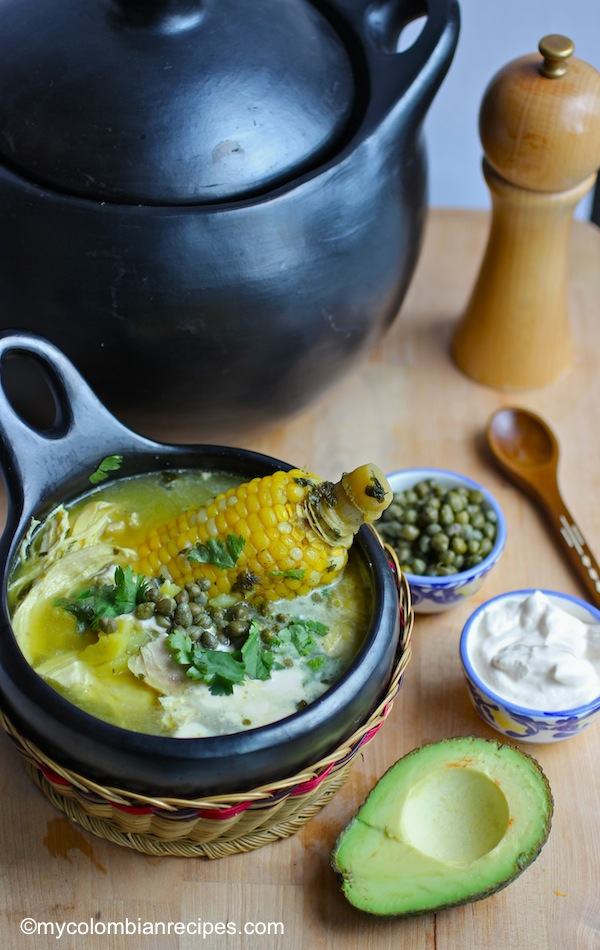

Ajiaco

Description
This recipe has always been one of my favorite recipes. Whenever my mother would
offer to make some I simply could not say no. The rich creamy taste is to die for!
Ingredients
- 3 chicken breast (skin removed)
- 12 cups of water
- 3 ears fresh corn (cut into 2 pieces)
- salt and pepper to taste
- 2 chicken bouillon cubes
- 3 scallion
- 2 garlic cloves (minced)
- 3 tablespoon chopped cilantro
- 2 cups papa criolla (Andean Potato)
- 3 medium white potatoes (peeled and sliced)
- 3 medium red potatoes (peeled and sliced)
- 1/3 cup guascas
- 1 cup heavy cream for serving
- 1 cup capers for serving